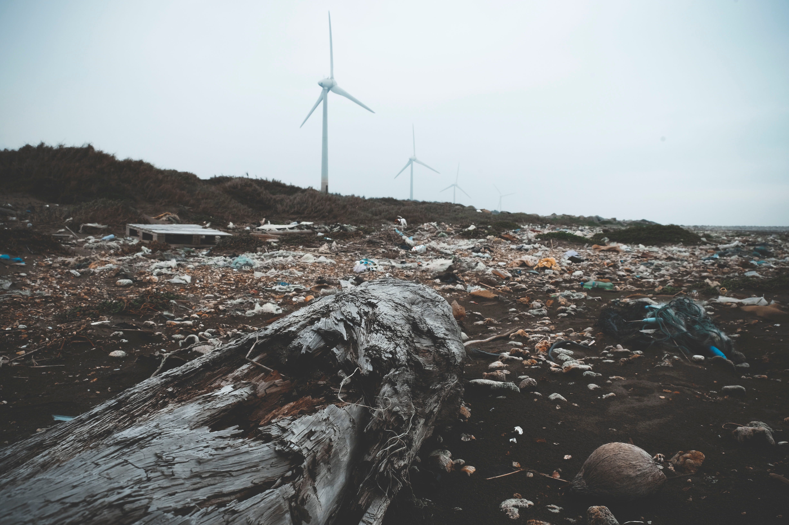

How much waste is generated in India?
India is getting buried under mounds of garbage as the country has been generating more than 1.50 lakh metric tonne (MT) of solid waste every day. Worse - approximately 90 per cent (1,35,000 MT per day) of the total amount is collected waste. Nearly 15,000 MT of garbage remain exposed every day, resulting in almost 55 lakh MT of solid waste disposed in open areas each year, which leads to "severe" pollution level. Of the total collected waste, only 20 per cent (27,000 MT per day) is processed and the remaining 80 per cent (1,08,000 MT per day) is dumped in landfill sites. Figures show that India generates nearly 26,000 MT of plastic waste on a daily basis and 94 lakh tonne trash every year.